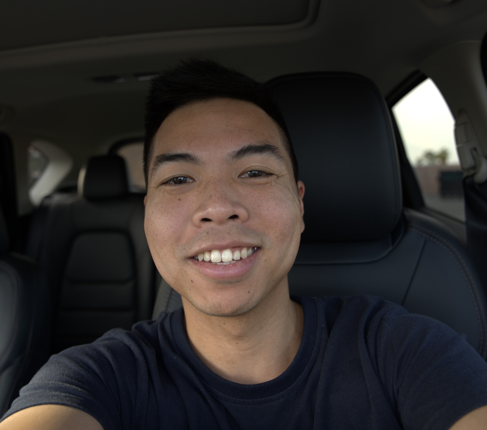

About Me
Experience
Projects
Certifications
Education
Andrew Perlas
System Administrator
____________________________________
Email
Linkedin
Github
PDF
Experience
Client Solution Architects
System Administrator | Sep 2022 - Present
Wakelight Technologies
Technical Service Lead | June 2022 - Sep 2022
TechMD
Professional Services Consultant | Feb 2021 - June 2022
Technical Lead/Escalations Analyst | May 2019 - Feb 2021
Team Lead | Apr 2018 - May 2019
Systems Analyst | Jan 2015 - Apr 2018
Projects
The Cloud Resume Challenge | 2023 - Present
Homelab | 2021 - Present
Skills
Certifications
July 2022
Education
California State University San Marcos
B.S. Management Information Systems | Aug 2010 - Dec 2014